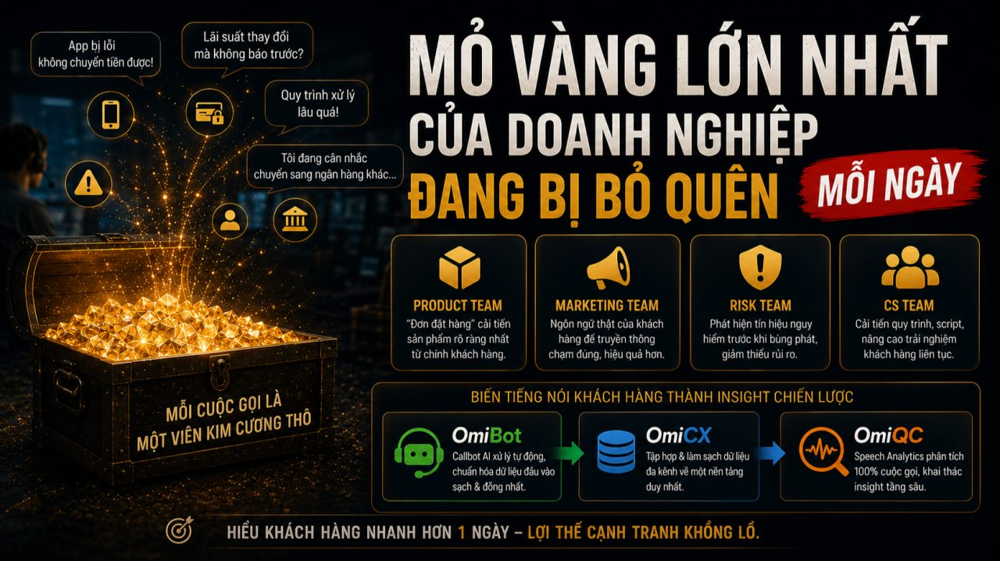
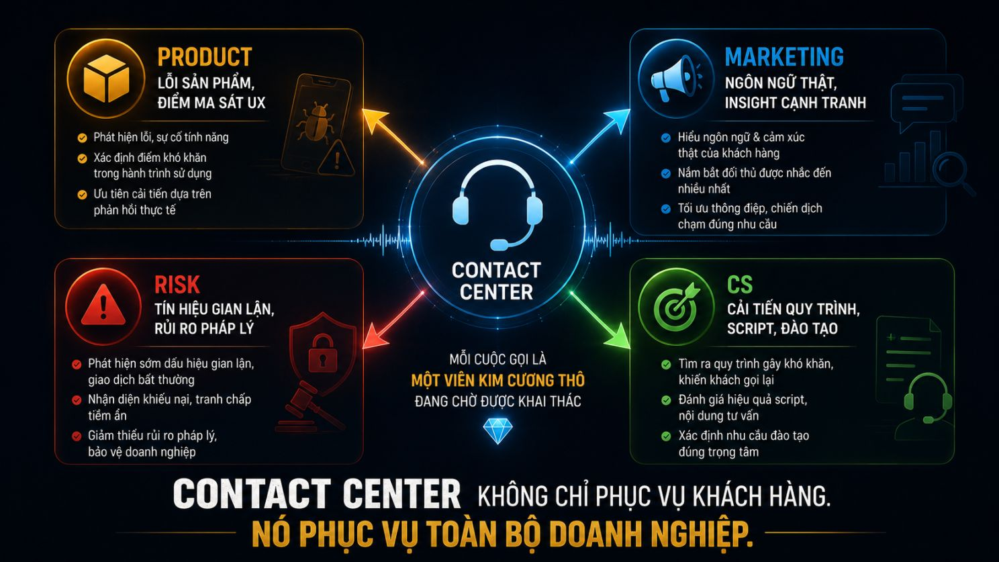
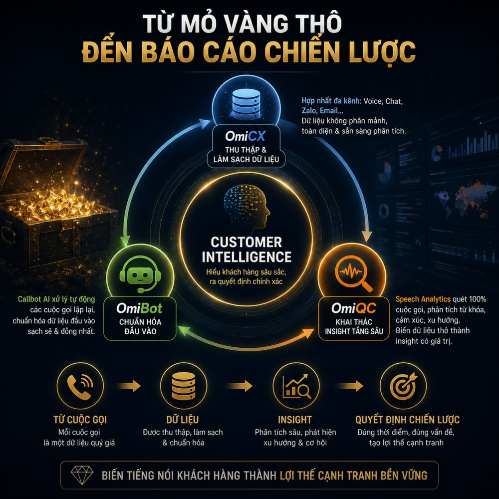

Trang chủ › Blog › Contact Center Insights · Mùa 1
Dữ liệu, AI và tương lai
Contact Center là “mỏ vàng dữ liệu”

Hầu hết nhà quản lý nhìn vào Contact Center và thấy những con số vận hành:
AHT bao nhiêu giây. SLA đạt bao nhiêu %. Tỷ lệ rớt cuộc gọi thế nào.
Nhưng dưới góc nhìn của một nhà quản trị chiến lược mỗi cuộc gọi là một "viên kim cương thô" đang bị bỏ qua.
Hãy thử hình dung:
Mỗi ngày Contact Center của một ngân hàng xử lý 10.000 cuộc gọi. Mỗi cuộc gọi là một khách hàng thật đang nói thật, nghĩ thật, phản ứng thật.
Họ gọi vào để phàn nàn về tính năng app bị lỗi.
Họ hỏi đi hỏi lại về điều khoản hợp đồng bảo hiểm không rõ ràng.
Họ bày tỏ bực bội với một quy trình xử lý chậm.
Họ vô tình tiết lộ lý do đang cân nhắc chuyển sang đối thủ.
Tất cả đang được ghi âm đầy đủ. Mỗi ngày. Hàng nghìn cuộc.
Và câu hỏi thực sự không phải "Làm sao xử lý cuộc gọi nhanh hơn?"
Mà là: "Doanh nghiệp đang làm gì với kho dữ liệu chiến lược đó?"
Ở bài #18 tuần trước, chúng ta đã nói về Speech Analytics công nghệ giúp phân tích 100% cuộc gọi thay vì chỉ sample 2% như QA truyền thống.
Bài #19 này muốn đi sâu hơn một bước:
Khi đã có dữ liệu từ 100% cuộc gọi insight đó tạo ra giá trị cho ai, và như thế nào?
Câu trả lời vượt xa những gì hầu hết mọi người nghĩ về Contact Center.
Contact Center biết những điều mà không bộ phận nào khác trong doanh nghiệp có thể biết được.
Vì đây là nơi duy nhất khách hàng nói thật không phải điền form khảo sát theo kiểu xã giao, không phải để lại review trên app store, không phải trả lời câu hỏi nghiên cứu thị trường.
Họ gọi vào vì đang có vấn đề thực sự. Và trong lúc đó, họ nói ra tất cả.
Đây là "mỏ vàng" sống động và thực tế nhất của toàn doanh nghiệp nếu biết cách khai thác.
Vậy insight từ Contact Center có thể đi đến đâu?
📦 Product Team "Đơn đặt hàng" cải tiến sản phẩm rõ ràng nhất
Khách hàng liên tục phàn nàn về tính năng mới trên app? Gặp khó khăn ở bước nhập mã OTP hay thao tác mở thẻ ảo?
Đó không phải trùng hợp đó là tín hiệu sản phẩm đang có vấn đề, và Product team cần biết trước khi tỷ lệ drop-off tăng lên trên dashboard.
Thay vì chờ kết quả nghiên cứu người dùng tốn hàng tháng và hàng trăm triệu đồng dữ liệu Contact Center cho biết ngay:
"Đây là 5 điểm ma sát lớn nhất khách hàng đang gặp với sản phẩm tuần này."
📣 Marketing Team Ngôn ngữ thật của khách hàng
Khách hàng không nói về sản phẩm theo ngôn ngữ của marketing brief.
Họ nói: "Cái app này rắc rối quá." Không phải: "UX chưa tối ưu."
Họ nói: "Sao lãi suất thay đổi mà không báo trước?" Không phải: "Thiếu transparency trong pricing."
Khi Marketing hiểu được ngôn ngữ thật đó content, messaging, chiến dịch sẽ chạm đúng hơn, thuyết phục hơn.
Và khi biết đối thủ nào đang được khách hàng nhắc đến nhiều nhất trong các cuộc gọi đó là thông tin cạnh tranh quý giá hơn bất kỳ báo cáo thị trường nào.
⚠️ Risk Team Phát hiện tín hiệu nguy hiểm trước khi bùng phát
Đây là ứng dụng ít được nói đến nhất nhưng có giá trị cao nhất trong ngành BFSI.
Tần suất các cuộc gọi báo mất thẻ, nghi ngờ gian lận hay lỗi giao dịch tăng đột biến ở một khung giờ nhất định?
Đó có thể là dấu hiệu của một đợt tấn công gian lận có tổ chức và Risk team cần dữ liệu thời gian thực để kích hoạt ngay kịch bản ngăn chặn.
Khi từ khóa liên quan đến tranh chấp, khiếu nại tập thể xuất hiện ngày càng nhiều trong các cuộc gọi
Risk team cần biết điều đó ngay hôm nay. Không phải sau khi sự việc lên báo.
🎯 CS Team Cải tiến liên tục từ chính dữ liệu vận hành
Và tất nhiên insight từ dữ liệu cuộc gọi quay lại phục vụ chính Contact Center:
Quy trình nào đang khiến khách hàng phải gọi lại nhiều lần nhất?
Script nào đang tạo ra nhầm lẫn thay vì giải thích rõ ràng?
Câu hỏi nào agent đang không có đủ thông tin để trả lời?
Câu trả lời không nằm trong cuộc họp nội bộ.
Nó nằm trong 10.000 cuộc gọi đang được ghi âm mỗi ngày.
Nhưng dữ liệu chỉ có giá trị khi được thu thập đúng, xử lý sạch và phân tích sâu.

Đây là nơi bộ ba giải pháp của Minh Phúc Transformation tạo ra vòng tròn khép kín từ "mỏ vàng thô" đến "báo cáo chiến lược":
OmiCX nhiệm vụ tập hợp và làm sạch dữ liệu tại gốc
Hợp nhất toàn bộ tương tác đa kênh Voice, Chat, Zalo, Email về một nền tảng duy nhất. Dữ liệu khách hàng không bị phân mảnh, tạo ra bức tranh hành trình toàn diện, sẵn sàng cho phân tích.
OmiBot nhiệm vụ Chuẩn hóa dữ liệu đầu vào
Callbot AI xử lý tự động các cuộc gọi lặp lại tra cứu số dư, xác nhận thông tin vừa giảm tải vận hành, vừa chuẩn hóa tập dữ liệu đầu vào một cách sạch sẽ và đồng nhất.
OmiQC nhiệm vụ "Máy dò vàng" khai thác insight tầng sâu
Tích hợp Speech Analytics để tự động quét 100% cuộc gọi, bóc tách từ khóa, phân tích xu hướng và cảm xúc khách hàng. Chuyển hóa hàng triệu phút ghi âm im lìm thành những insight "biết nói" cho các phòng ban liên quan.
Ba giải pháp này không chỉ giúp Contact Center vận hành tốt hơn.
Chúng giúp doanh nghiệp hiểu khách hàng sâu hơn từ chính tiếng nói của khách hàng, mỗi ngày, không cần khảo sát, không cần nghiên cứu thị trường tốn kém.
Đã đến lúc thay đổi tư duy quản trị.
Đừng coi Contact Center là "trung tâm chi phí" bắt buộc phải có để giải quyết khiếu nại.
Hãy tái định nghĩa nó thành "trạm phát tín hiệu chiến lược" của toàn doanh nghiệp.
Khi tiếng nói khách hàng được lắng nghe và phân tích đúng cách mọi quyết định từ sản phẩm, marketing đến quản trị rủi ro đều đi trúng hồng tâm.
Và trong ngành BFSI, nơi hiểu khách hàng nhanh hơn đối thủ một ngày có thể tạo ra lợi thế cạnh tranh khổng lồ
Mỗi cuộc gọi không được phân tích là một cơ hội bị bỏ lỡ.

Rất mong nghe góc nhìn thực tế từ anh/chị đang vận hành Contact Center 👇
Tại doanh nghiệp của anh/chị dữ liệu từ các cuộc gọi hotline hiện đang được chia sẻ cho các phòng ban khác theo tần suất nào?
- 🔄 Theo thời gian thực real-time qua dashboard
- ⏱️ Định kỳ hàng tuần/tháng bằng báo cáo thủ công
- 🛑 Chưa chia sẻ dữ liệu vẫn nằm im trong bộ phận Contact Center
- 🚀 Đã xây dựng hệ thống chia sẻ insight liên phòng ban
Rất mong được trao đổi cùng anh/chị 👇